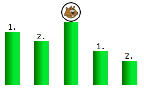
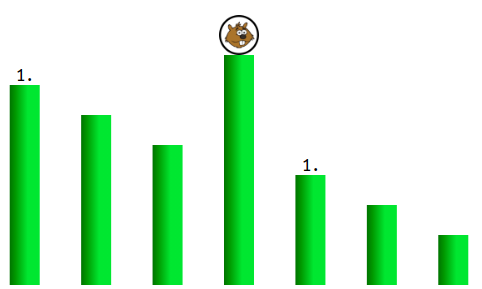
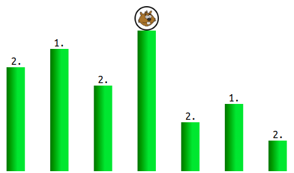
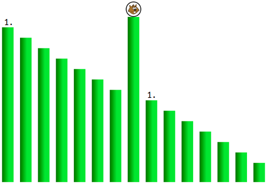
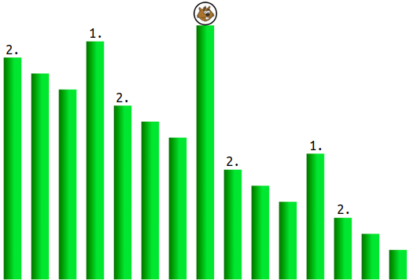
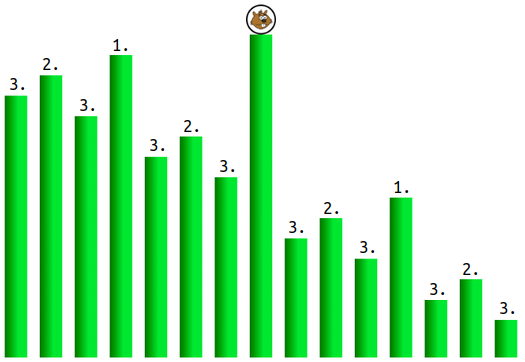

Ratkaisu
Aseta majavan lähtöpylväs keskimmäiseksi. Nyt majava voi tehdä korkeintaan 2 hyppyä keskipylväältä sen jommalla kummalla puolella oleville kahdelle pylväälle.

Tarkastellaan majavan ensimmäistä hyppyä. Voimme tehdä kolme havaintoa:
- Majava hyppää korkeimmalta pylväältä jollekin sen vasemmalla tai oikealla puolella olevalle pylväälle. Myös kaikkien loppujen hyppyjen tulee kohdistua samalla puolella lähtöpylvästä oleviin pylväisiin, koska majava ei enää myöhemmin pysty hyppäämään lähtöpylvään yli sen vastakkaiselle puolelle.
- Majavan kannattaa aina hypätä valitsemansa puolen korkeimmalle pylväälle: kyseiseltä korkeimmalta pylväältä voi puolestaan hypätä mille tahansa muulle kyseisen puolen pylväälle, joten hyppy suoraan jollekin toiselle pylväälle johtaisi kokonaisuudessaan vähintään yhteen hyppyyn vähemmän kuin hyppääminen korkeimman pylvään kautta.
- Majava ei voi suorittaa enempää hyppyjä kuin mitä lähtöpylväältä hypätyllä puolella on pylväitä. Hyppyjen määrän voi minimoida huolehtimalla, että lähtöpylvään hypätyllä puolella voi isoimmillaankin olla mahdollisimman vähän pylväitä. Tämä saadaan aikaan siirtämällä lähtöpylväs keskelle.
Edellisen mukaan voimme aloittaa asettamalla majavan lähtöpylvään keskimmäiseksi: majavan lähtöpylvään kummallekin puolelle jää 3 pylvään joukot, ja ensimmäinen hyppy päätyy niistä jomman kumman korkeimmalle pylväälle.

Tarkastellaan nyt majavan toista hyppyä. Edellisen havainnon mukaan voimme olettaa, että majava on nyt lähtöpylvään jommalla kummalla puolella olevan pylväsjoukon korkeimmalla pylväällä. Voimme huomata, että ongelmanasettelu on oikeastaan hyvin samanlainen kuin alussa: majava on jonkin pylväsjoukon (tässä rajoitettu nyt lähtöpylvään vasemman- tai oikeanpuoleiseen pylväsjoukkoon) korkeimmalla pylväällä ja pyrkii hyppäämään (tästä eteenpäinkin) mahdollisimman monta kertaa. Voimme siten soveltaa samaa logiikkaa kuin edellä, mutta nyt erikseen lähtöpylvään kummankin puoleisiin pylväsjoukkoihin: siirretään lähtöpylvään kummankin puolen pylväsjoukkojen korkeimmat pylväät kyseisten joukkojen keskimmäisiksi pylväiksi. Näiden keskimmäisten pylväiden oikeille ja vasemmille puolille jää 1 pylvään joukot, ja majavan (viimeistään) toinen hyppy päätyy niistä jonkin ainoalle pylväälle.
Majava ei pääse enää 1 pylvään joukosta eteenpäin (ei ole enää oikeaa tai vasenta vielä matalammista pylväistä koostuvaa puolta, mihin hypätä). Hyppyjä tulee näin ollen korkeintaan 2. Ratkaisu on valmis.

Majava hyppää korkeimmalta pylväältä jollekin sen vasemmalla tai oikealla puolella olevalle pylväälle. Myös kaikkien loppujen hyppyjen tulee kohdistua samalla puolella lähtöpylvästä oleviin pylväisiin, koska majava ei enää myöhemmin pysty hyppäämään lähtöpylvään yli sen vastakkaiselle puolelle.
Majavan kannattaa aina hypätä valitsemansa puolen korkeimmalle pylväälle: kyseiseltä korkeimmalta pylväältä voi puolestaan hypätä mille tahansa muulle kyseisen puolen pylväälle, joten hyppy suoraan jollekin toiselle pylväälle johtaisi kokonaisuudessaan vähintään yhteen hyppyyn vähemmän kuin hyppääminen korkeimman pylvään kautta.
Majava ei voi suorittaa enempää hyppyjä kuin mitä lähtöpylväältä hypätyllä puolella on pylväitä. Hyppyjen määrän voi minimoida huolehtimalla, että lähtöpylvään hypätyllä puolella voi isoimmillaankin olla mahdollisimman vähän pylväitä. Tämä saadaan aikaan siirtämällä lähtöpylväs keskelle.
Edellisen mukaan voimme aloittaa asettamalla majavan lähtöpylvään keskimmäiseksi: majavan lähtöpylvään kummallekin puolelle jää 7 pylvään joukot, ja ensimmäinen hyppy päätyy niistä jomman kumman korkeimmalle pylväälle.

Tarkastellaan nyt majavan toista hyppyä. Edellisen havainnon mukaan voimme olettaa, että majava on nyt lähtöpylvään jommalla kummalla puolella olevan 7 pylvään joukon korkeimmalla pylväällä. Voimme huomata, että ongelmanasettelu on oikeastaan hyvin samanlainen kuin alussa: majava on jonkin pylväsjoukon (tässä rajoitettu nyt lähtöpylvään vasemman- tai oikeanpuoleiseen pylväsjoukkoon) korkeimmalla pylväällä ja pyrkii hyppäämään (tästä eteenpäinkin) mahdollisimman monta kertaa. Voimme siten soveltaa samaa logiikkaa kuin edellä, mutta nyt erikseen lähtöpylvään kummankin puoleisiin pylväsjoukkoihin: siirretään lähtöpylvään kummankin puolen pylväsjoukkojen korkeimmat pylväät kyseisten joukkojen keskimmäisiksi pylväiksi. Näiden keskimmäisten pylväiden oikeille ja vasemmille puolille jää 3 pylvään joukot, ja majavan (viimeistään) toinen hyppy päätyy niistä jonkin korkeimmalle pylväälle.

Kun tarkastelemme seuraavaksi kolmatta hyppyä, voimme jälleen huomata olevamme samassa tilanteessa kuin edellä. Nyt vain olemme päätyneet tarkastelemaan lähtöpylvään kummankin puolen 7 pylvään joukkojen keskimmäisten pylväiden kummallakin puolella olevia neljää eri 3 pylvään pylväsjoukkoa. Siirretään näidenkin joukkojen korkeimmat pylväät keskimmäisiksi, jolloin keskimmäisten pylväiden oikeille ja vasemmille puolille jää 1 pylvään joukot. Majavan (viimeistään) kolmas hyppy päätyy jonkin 1 pylvään joukon ainoalle pylväälle.
Majava ei pääse enää 1 pylvään joukosta eteenpäin (ei ole enää oikeaa tai vasenta vielä matalammista pylväistä koostuvaa puolta, mihin hypätä). Hyppyjä tulee näin ollen korkeintaan 2. Ratkaisu on valmis.

On hyvä huomata, että jos pylväitä olisi enemmän, voisi samaa ideaa jatkaa seuraavaksi neljänteen, viidenteen, jne. hyppyyn, kunnes vasemmat ja/tai oikeat pylväsjoukot koostuvat enää yksittäisistä (tai tyhjistä) pylväistä. Päädymme varsin nopeasti tällaiseen tilanteeseen, koska tarkastelemamme pylväsjoukot tulevat suunnilleen puolitetuiksi kunkin hyppykerran yhteydessä.
Tämä on tietojenkäsittelyä!
Tehtävän haastavampien versioiden ratkaisuiden yhteydessä ongelmaa analysoitiin rekursiivisesti. Rekursio on tietojenkäsittelyn sovelluksissa monesti käytetty tekniikka, missä jokin toimenpide (tässä tehtävässä: hyppy korkeimmalta pylväältä sen jommalle kummalle puolelle) suoritetaan toistuvasti alitapauksiin haarautuen (tässä tehtävässä: korkeimman pylvään oikean- ja vasemmanpuoleisiin pylväsjoukkoihin). Rekursio on huolellisesti sovellettuna varsin kätevä lähestymistapa monien tietojenkäsittelyn ongelmien analysointiin ja ratkaisuun, joskin tekniikkaa pidetään hieman hankalana oppia.
Katso lisää esim. https://fi.wikipedia.org/wiki/Rekursiivinen_algoritmi.